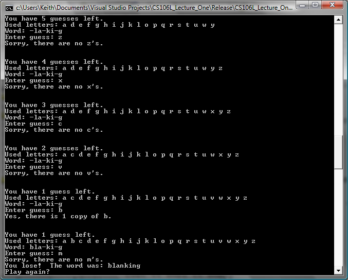

Evil Hangman is an assignment in which students write a computer program that cheats at the classic game Hangman. Normally, when writing a computer to play Hangman, the computer picks a single word and accurately represents it as the human player tries to guess all of the letters in the word. In Evil Hangman, the computer instead maintains a list of every word in the English language, then continuously pares down the word list to try to dodge the player's guesses as much as possible. Human players tend to fare terribly against this conniving silicon foe!
| Summary | Students write a program in which the computer cheats at Hangman by actively dodging players' guesses. |
| Topics | Associative arrays, string processing, file I/O. |
| Audience | CS2, though the assignment could be used toward the end of a CS1 course as well. |
| Difficulty | Low to moderate. Most students can complete the assignment in five to seven hours. |
| Strengths | Exercises associative arrays in a way that really makes them shine. Plus, the end product is fairly memorable. |
| Weaknesses | Because the data set (all English words) is fairly large, efficiency can be a concern and suboptimal design decisions can have a noticable impact on performance. |
| Dependencies | String processing, file I/O, basic understanding of linear and associative arrays. |
| Variants | Students can use algorithms other than the suggested implementation to get the computer to perform even better than the reference implementation. |

The algorithm that drives Evil Hangman is fairly straightfoward. The computer begins by maintaining a list of all words in the English language of a particular length. Whenever the player guesses, the computer partitions the words into "word families" based on the positions of the guessed letters in the words. For example, if the word list is ECHO, HEAL, BEST, and LAZY and the player guesses the letter 'E', then there would be three word families:
This assignment is geared toward introductory CS2 students and focuses on proper data structure usage. I have been using it in a CS2-level introductory C++ programming course to help students play around with the STL map and vector data structures, though it could easily be adapted for any programming language with associative and linear arrays.
I think this assignment is nifty for several reasons. Pedagogically, it's a great way to show off the merits of different data structures. The core algorithm requires a little bit of everything - maps to associate word families with the words in them, lists or sets to keep track of the word list, strings to keep track of the guessed letters, etc. From an entertainment perspective, students get to write a program that can bend the rules of Hangman in ways that no human would normally be able to do, and end up with a program that is great for toying around with unsuspecting humans. I've found that many students test out their programs on their friends or family, often learning the benefits of having testers that like typing in unusual input. :-) Additionally, if your students have already implemented regular Hangman as an assignment (as is the case for Stanford students), it can be really rewarding for students to see how much they've progressed. The transition from building a program that blindly chooses words to one that actively tries to trounce its opponent can give students a very tangible sense of how much they're learning.
Another interesting part of this assignment is that students often find ways to improve upon the base algorithm. The word families approach does a pretty good job trouncing humans, but does have a few cases in which it plays suboptimally. For example, the algorithm never takes the number of human guesses left into account. If there are a large number of words in the word list and the human has only one guess left, the computer does not automatically make the human's next guess wrong when possible, meaning that a human with one guess left can still win the game. Additionally, the algorithm does not try to look several moves deep to determine what the best family to choose is. Students can come up with their own ideas to try to correct these shortcomings, which can be simple (tuning the weights of each word family based on factors other than size) or complex (depth-limited minimax searches).
If you have any questions about this assignment, or have a fun story that you want to share, feel free to email me at htiek@cs.stanford.edu. I'd love to help you deploy/test/improve the assignment!
Ensemble info about this assignment: